왜 이렇게 만들었나
사회조사방법 8조 · 발표자가 함께 설명하면 좋은 것들
왜 '게임' 연출인가
평범한 퀘스트 → 반전
1부는 아무 설명 없이 "3교시까지 수업 들으러 가기"라는 평범한 등교 퀘스트로 시작한다. 관객은 그냥 길을 고르고, 시간 안에 강의실에 도착한다. 1부가 끝나면 같은 하루를 휠체어 이용 학생의 시점으로 다시 하게 된다는 사실이 공개된다.
처음부터 "장애인 이동권 다큐"라고 밝히면 관객은 결론을 예상하고 본다. 먼저 아무 생각 없이 같은 길을 지나 보게 한 뒤 다시 보여 주면, 1부에서 당연했던 계단·지름길·빠른 엘리베이터가 2부에서 하나씩 사라지는 것이 더 크게 느껴진다.
선택지가 줄어드는 경험
영상만 보여 주면 관객은 구경꾼이 된다. 갈림길마다 관객이 직접 길을 고르게 했다. 1부에서는 어느 길을 골라도 갈 수 있지만, 2부에서 계단 쪽을 고르면 GAME OVER가 된다. "선택지가 줄어든다"는 것을 말로 설명하는 대신 직접 겪게 하려는 장치다.
공정한 비교
두 사람은 같은 출발 시각, 같은 시간표, 같은 강의실로 움직인다. 출발: 1교시 9:21 · 2교시 10:15 · 3교시 11:45. 수업 시작: 9:30 · 10:30 · 12:00. 차이는 오직 길과 이동 방식에서만 나온다. 수업 시작보다 늦게 도착하면 교시 끝 화면에 STAGE LATE가 뜨고, 결과 화면에서는 교시별 이동 시간을 막대로 나란히 비교한다.
시계와 배율의 근거
시계 = 원본 촬영 시간
화면 속 영상은 구간마다 빨리감기된 편집본이다. 그래서 시계는 편집본 재생 시간이 아니라 원본 촬영 파일에서 실제로 흐른 시간을 따라간다. 편집본 영상과 원본 촬영 파일을 0.5초 단위로 장면 대조해서 "편집본 몇 초 = 원본 몇 초" 시간표를 만들었다. 걷기 영상은 이 시간표 그대로(1배), 영상을 빠르게 틀어도 시계는 원본 시간을 따른다.
휠체어: 혼자 미는 속도로 환산
휠체어 촬영은 뒤에서 사람이 밀어 준 상태로 진행했다. 게임 속 학생은 혼자 휠체어를 민다고 설정했기 때문에, 원본 시간에 아래 배율을 곱했다.
| 구간 | 배율 | 이유 |
|---|---|---|
| 평지 | 1.3배 | 밀어 준 속도는 걷는 속도에 가깝고, 혼자 손으로 밀면 평지에서도 느려진다 |
| 오르막·경사로 | 2배 | 오르막에선 손으로 미는 힘이 훨씬 많이 들어 속도가 크게 떨어진다 |
| 국제관 가는 급경사 | 3배 | 혼자서는 중간중간 멈춰 쉬어야 하는 구간으로 봤다 |
| 엘리베이터 대기·탑승 | 1배 (실제 시간) | 미는 속도와 상관없다. 원본에서 실제로 기다린 시간 그대로 |
참고한 자료:
- 휠체어 자가 추진 속도 관련 연구 (PMC3058839)
- 야외 보도에서의 휠체어 추진 부담 (UTMB)
- 경사면 휠체어 추진 근거 정리 (SCIRE)
- 휠체어 이동 속도 관련 논문 (Massey University)
엘리베이터 대기
엘리베이터를 기다리는 구간은 영상 배속을 풀어 천천히 보여 주고, 화면 위쪽에 "엘리베이터 기다리는 중 m:ss"로 실제로 기다린 시간을 표시한다. 기다림이 끝나면 "띵" 소리가 난다. 원본에서 실제로 기다린 시간은 다음과 같다.
| 장면 | 실제 대기·탑승 |
|---|---|
| 1교시 · 미디어관 2층 → 4층 (사람이 많아 두 번 놓침) | 5분 20초 |
| 2교시 출발 · 미디어관 내려가기 | 1분 18초 |
| 3교시 출발 · 교양관 내려가기 | 1분 10초 |
| 1교시 · 미디어관 1층 길 | 51초 |
| 2교시 · 교양관 | 37초 |
엔딩 (예시 경로 기준)
나는 정후 → 엘리베이터 길, 휠체어는 정후 → 2층 입구 길을 골랐을 때. 실제 플레이에선 고른 길에 따라 달라진다.
| 교시 | 나 (비장애) | 휠체어 (혼자 밀기) | 차이 |
|---|---|---|---|
| 1교시 미디어관 | 4:34 · 출석 | 13:26 · 4분 26초 지각 | 2.9배 |
| 2교시 교양관 | 0:52 · 출석 | 7:39 · 출석 | 8.8배 |
| 3교시 국제관 | 3:19 · 출석 | 12:20 · 출석 (2분 40초 전) | 3.7배 |
지각은 1교시 한 번뿐이지만, 휠체어 학생은 매 교시 아슬아슬하게 도착한다. 바로 옆 건물인 교양관도 돌아가야 해서 8.8배가 걸린다.
AI 사용 기록
어디에 어떤 도구를 썼나
| 도구 | 쓴 곳 |
|---|---|
| Claude Code | 사이트 코드 전체(화면 흐름·선택지·연출·전환 효과), 자막 타이핑 효과, 효과음·배경음(브라우저 WebAudio로 직접 합성), 지나가는 사람 얼굴 모자이크(macOS Vision 얼굴·자세 인식 + 프레임 간 추적·보간), 편집본↔원본 장면 대조 시간표, 휠체어 속도 배율 자료 조사 |
| GPT 이미지 생성 | 조원이 만든 게임 그림 에셋: 타이틀 로고, 배경, 인게임 돌 틀·배경, 장소·시계 판, 달리기·휠체어 스프라이트 |
| Higgsfield | 초기 시안 이미지 일부를 생성했지만, 최종본에서는 조원이 만든 에셋으로 교체했다 |
촬영(영상)과 자막 문구, 길 선택 구조는 조원들이 직접 정했다. AI는 그것을 게임 형태로 구현하고 다듬는 데 썼다.
주요 프롬프트 (요청을 짧게 다듬음 · 누르면 원문)
"1부는 평범한 수업 들으러 가기 퀘스트처럼 보이게 하고, 끝나고 나서 휠체어 시점이라는 걸 반전으로 공개해 줘"
"지나가는 사람들 얼굴 모자이크해 줄 수 있어? 더 정확하게"
"레퍼런스 GIF 같은 레트로 픽셀 게임 스타일로, 글씨체도 맞춰 줘"
"조원이 만든 안암런 에셋으로 타이틀·인게임 화면을 바꾸고 배경이 움직이게 해 줘"
"지각했는데 STAGE CLEAR가 뜨면 안 되지"
그리고 시계 리얼타임으로 가자
원본 영상 알지? 그 시간 반영해서 시계 흐르게 해줘
둘 다
내가 지금까지 시계에 대해 했던 말들은 일단 잊어보고
이렇게 하면 엔딩이 어떻게 되는지 적용하고 맗줘봐
15분 넘게 촬영한 본이 없었나?
"시계를 리얼타임으로, 원본 영상 시간을 반영해서 흐르게 해 줘"
그리고 시계 리얼타임으로 가자
원본 영상 알지? 그 시간 반영해서 시계 흐르게 해줘
둘 다
내가 지금까지 시계에 대해 했던 말들은 일단 잊어보고
이렇게 하면 엔딩이 어떻게 되는지 적용하고 맗줘봐
15분 넘게 촬영한 본이 없었나?
"촬영 땐 뒤에서 휠체어를 밀어 준 걸 감안해서 계산해 줘"
"오르막 2배, 평지 1.3배로 나눠서 해 줘"
"국제관 올라가는 데 10분은 말이 안 돼, 엘리베이터 대기도 리얼타임으로"
그리고 엘베 대기도 리얼타임으로 해줘야지
"결과 화면에 나랑 휠체어 이동 시간을 비교 막대로 보여 줘"
사이트 제작 프롬프트 전체 기록 (136개) 펼치기
2026-11-21 ~ 11-25, Claude Code에 보낸 요청 원문 그대로 (시간순, 한국 시간). 링크·이메일은 가리고 비속어는 모자이크함.
- [링크]
이 드라이브에 기획안이랑 컷편본 있고 와이어프레임 있거든? 너 드라이브에서 영상 다운로드 가능? 다운로드해서 초안이랑 와이어프레임 참고해서 웹사이트 제작 가능? - 음? 드라이브에 있는데 안보이면 데스크탑에 두 파일 다 다운로드했어
- A. 노트북에서 여는 사이트 (추천): 영상을 받아서 용량을 줄이고, 폴더째 열면 바로 돌아가게 만들어. 발표장 인터넷이 안 돼도 끊기지 않아. 근데 이렇게하면 내 노트북에서만 열수있는거아니야?
- 흠인터넷에 올려야돼
- 압축을 해보자 파일을
- ㅇㅇ그리고 뭐 안내멘트? 뭐 어디 들어왔다. 근데 막혔다. 실패! 이런 멘트들도 넣어줘야돼
- 그리고 디자인도 다른 사이트들 좀 참고해서 레퍼런스 찾아서 예쁘게만들어줘
- 영상안보이는디?
- 재생눌러도안보여
- 흠... 일단 첫영상에서 갈림길이 나오고 한번 두리번 좌우로 패닝한 뒤 정지가 되면서 선택지가 나와야돼
- 흠... 해보니 문제점이 몇가지 있어 1번 비장애인 시점 영상과 2번 장애인시점 영상 컷편집 방식이 다르네... 2번 장애인시점은 주로 배속, 주요 구간만 원배속으로했고 1번 장애인시점은 불필요한 컷을 잘랐더라고 1번도 2번과 비슷한 컷편집 방식으로 바꾸고 싶은데 니가 할수있어?
- 아 그리고 영상들 소리 다 죽여
- 너 근데 비장애인시점 원본 어딨는지알아? 지금은 컷편본이라 이걸 배속감으면 안돼
- [링크] 이 링크에서 소유자가 [이메일] 돼있는 파일들이란다... 근데 각각 어떤 건지는 네가 대조해봐야돼
- 근데 이거 배속 장애인시점이랑 똑같이 걸린거야? 약간 느린거같기도 한데? 글고 비장애인시점 미디어관1층으로가기 이거는 쭉 배속 걸어도 ㄱㅊ을거같네 뭐 미디어관모퉁이도는거, 엘베타는거1번, 빼고는 걍 쭉 배속걸자 너무 느리다
- 그리고 엘베 타고 4층 도착해서 어디 교실에 도착했다가 영상이 끊기고 다시 시네마트랩에 들어가는데 걍 엘베 내리고 바로 시네마트랩으로 가게해줘
- 비장애인시점 국제관도 국제관들어와서 엘베앞에서 망설이는거 빼고 바로 다음영상인 강의실로 들어오게해줘
- ㅇㅇ 3번도 그렇게 해주고 모퉁이마다 배속 풀필요 없어 중요한데만 남겨놓고 다 배속하고 배속풀기 앞뒤로 2-3초정도는 배속푼채로 두자
그리고 하단에 재생바?도 만들어서 영상 이동할수있게도 해주고 그건 마우스 대면 나오도록 해줘. 그리고 뒤로가기 버튼도 만들어줘 - 11시까지보내기로했는디...
- 얼마나남음?
- 와 그리고 그러기전에 일단 이거 링크있으면 공유가능하게해봐 그게 먼저
- 한국어로 ■■■■■
- 아니 ■■ 화면에 하얀 박스가 너무 많잖아
- 그리고 선택지는 하얀박스 말고 걍 하얀폰트로 해줘
- 수정하면 바로 배포해줘
- 한국어로 말하라고
- 야 그 사이트에서 ㅈ수정한 거 자막 저장이 안되네
- 다운받아서 데스크탑으로옮겼단다?
- 흠 디자인을 좀 수정해보자. 전체적으로 약간 픽셀게임 느낌이 났음 좋겠어. 내가 방금 데스크탑에 다운받은 11개의 이미지를 참고해서 웹사이트의 모든 디자인을 수정해줘
- 효과음도 넣어줘 그리고 안내창이랑 글자크기 좀만 더 키워주고, 갈림길때 글씨는 아래 말고 가운데에 있게해줘. 그리고 재생바는 없어도 될듯?
- 그리고 이 사이트를 발표하며 알아야할점은... 장애vs비장애 구도로 처음부터 시작하는게 아니라 평범한 캠퍼스 투어인척하다가 도착 후에 그럼 이제 다른 학생의 시점을 한번 알아볼까요? 라고하며 장애학생의 시점을 보여주는 약간의 반전이 있어야돼
- 그리고 아이콘 같은 거 있잖아 뭐 체크 아이콘... 이런거 기본아이콘으로 쓰면 너무 클로드같아서 이것도 픽셀화해주든가 안되면 걍 빼줘
- 그리고 영상 사이사이 검은화면 뜨는데 왜이러는거야?
- 글고 휠체어 1교시 지각하는 거 뭐 1분지각으로는 택도없으니까 한 12분정도 지각하게해줘
- 아직 반영이 안된거지?
- 아 캠퍼스투어가 아니라 3교시까지 수업들으러 가기인데 이걸 어떻게 제목처럼 만들수잇지
- 아니 애초에 같은 길,
다른 거리 이게 제목이면 안된다니까는 - 흠 근데 색깔이나 그래픽이 아직도 약간 클로드 느낌이 있어서 좀만 더 손봐줬음 좋겠어
그리고 영상... 이 너무 밤틴데 흠... 채도를 좀 높여서 게임느낌을 넣어볼까?... 흠... 방법이 없을까? - 그리고 너 혹시 영상 모자이크도 할수있어? ㅜㅜ 얼굴이 너무 적나라하게 찍힌 행인들만 모자이크를 좀 해주면 좋을거같은데
- 야 근데 영상 도트필터 끈게 기본이고 눌러서 켤수있게하고 시계 디자인 뭐 장난하자는거냐?
- 그리고 1교시 끝! 마다 나오는화면이 왜 밤이야? 밤이면 안된지
- 첫화면 검은글씨 왜이렇게깨져?
- 흠 아직도 디자인이 약간 클로드같네... 색감이나 글씨폰트 요런느낌으로 한번 해볼래? 73070870226982a0854a75764dfc7e5b.gif
- 그리고 모자이크 좀만 더 정확하게 해주라
- 언제다돼?
- ㅇㅇ 끝나면 바로 올려줘
- 그럼 지금 올라가는 중인게 모자이크만 수정된거지?
- 그 시작화면이랑 교시끝마다 나오는 화면들 퀄리티가 넘 낮아 내가 아까 준 모브싸이코? 수준으로 퀄좀 올려줘
- 시계 그렇게 하고, 화면에 뜨는 글씨들은 게임 선택창? 아이템창? 처럼 구현해줘 퀄리티는 방금 요청한 것처럼 올려서
- 그리고 시계는 박스 안에 있는게 더 잘보이긴 하네
- 아니 일러스트로 하되 모브사이코 느낌으로 바꾸랬지 언제 화면을 캡쳐하랬어? 일단 교시끝 화면은 이대로 두고 게임시작화면, 휠체어시작화면은 원래 일러스트 느낌으로 바꿔줘 근데 퀄리티 업 많이 한
- 그리고 선ㅊ택지는 위아래로 있는거보다 아까처럼 좌우로 있는게 좋을거같아 한국어로말하랬지
- 음... ■■■■하지말고 73070870226982a0854a75764dfc7e5b.gif 이거 일러스트 스타일 완전히 모방해줘 글씨체도 해당 느낌의 한글폰트로 바꾸고
- 235165_120728_2620.jpg 그 일러스트 스타일로 이거 고려대 그려서 띄워주고 캐릭터도 같이 띄워줘
- 그리고 버튼들은 4bb120804cff21f2e7d3a0f23f8cfcd2.jpg 이거 참고해 글씨나 효과는 이거 참고하고 bc5338d55c00cb263a4f34630d996cff.jpg
- 시작이랑 전환화면들 퀄리티 좀만 더 높여줘 특히 캐틱터 이미지... 그리고 색감도 이거 완전 따라갔음 좋겠어 73070870226982a0854a75764dfc7e5b.gif
- 아니 버튼만 수정하는게 아니라 시계랑 안암역>갈림길 이런것도 좀씩 손봐줘야지
- 그리고 창은 남색인데 버튼이 금속느낌이라 어색하고 버튼 속 글씨가 잘 안읽혀
- 그리ㅣ고 국제관 올라가는거 ■■ 한참걸리니까 이것도 한참지각으로 해줘
- 바뀐거 다좋은데 갈림길에서 미디어관으로 가는 길, 어디로 갈까? 이 글씨 왤케 테두리가 번져있는거같지? 읽기 불ㅎ편해
- 그리고 자막이랑 문구 전반적으로 수정하게 그 수정 사이트 한번 더 열어주라 최신 버전으로
- 방금 자막 수정하고 파일 내려받았어
- 좀만 더 73070870226982a0854a75764dfc7e5b.gif 이거랑 가깝게 수정해줘 스타일, 캐릭터, 폰트(특히. 지금 구려), 색감
- 전체적으로 좀 더 퀄리티 좋은 게임처럼 보이게 하려면 어떻게 하면 좋을까? 지금 약간 아쉬운디.
- 힉스필드로 생성을 하자 근데 제목이 좀 더 깔쌈했음 좋겠어 뭐 예를들어 수업가자! 나 지각금지! 같은거
- 제목 ㅊ천좀해봐 지각금지 말고 더 깔쌈한거
- 아니 잠만 만들이마봐
- 안암런 ㄱㄱ
- 그리고 런에 RUN이걸로 써줘
- ㅇㅇ 걷기 애니메이션 만들어줘
- 아 잠만
- 전혀 이늒낌이 아니잖아 73070870226982a0854a75764dfc7e5b.gif
- 그리고 지금배경 캐릭터까지 ■■ 지피티같아
- 버튼으로는 해줘 텍스트 잘 안보임
그리고 캐릭터 ㅓㄹ굴이 너무;;뭉개졌고
배경은 일단 뭐 ㅇㅋ인데 너 로고 ■■■■밖에 못만드냐? - 그리고 색ㄱ감이랑 캐릭터 스타일 좀만 더 이럴게가자
73070870226982a0854a75764dfc7e5b.gif - 아 미감이 왜이렇게■■■■ 내가 지피티로만들어서넣어뒀으니까이걸로한번얹어봐 안암런 폴더에있고 이거기본으로 배경 움직이게도 할수있냐?
- 아... ■■■ 3교시까지수업들으러가기 글씨 걍 빼고 내가 준 합본처럼 로고만 박으라고 그리고 구름 말고 다른것도 움직이게 못해?
- 그리고 구름 가운데에 ㅜ먼 선 있음
- [Image #1] 그리고 캐릭터 이걸로 해서 뛰는 모션으로 넣어줘
- 휠체어 라이더 픽셀 애니메이션.png 휠체어 캐릭터는 이걸로 바꿔줘
- 엄... 그리고 게임시작 버튼 한번 버튼빼고 레ㅊ퍼런스처럼 텍스트만 한번 넣어볼까? 하얀색으로
- 아니 그리고 애가 움직이지 말고 같은자리 우하단에서 걍 멈춰서 뛰는거처럼 해줘
- 안암런 로고 쪼끔만 더 밑으로 내리자 그리고 캐릭터가 좀만 더 우측으로 가게해줘 건물 옆쪽 하늘에 위치하게
- ㅇㅇ 그리고ㅜ...이제 이 배경 그림체에 맞춰서 게임 내부 화면들도 맞추자 색감, 버튼, 폰트, 창 다
- 그리고 오늘의 시간표를 눌러야 나오는게 아니라, 화면 한가운데 게임시작 버튼(버튼으로 넣어줘 ㅎ)ㅂ만 있고, 누르면 다음 화면에 게임튜토리얼처럼 오늘의시간표의 설명이 나오는걸로 하자 글자도 한글자씩 나오게... 그리고 그 다음에 게임이 ㄹㅇ 시작하는거지
- 그리고 게임시작 말고 등교 시작! 으로 가자
- 결과 화면도 같은 그림체로 바꿔줘
그리고 그... 휠체어 전환화면에섴ㅋㅋ 휠체어 속도가 너무빨라서 경박스러워 좀 천천히해봐 - 버튼너무크고 좀 내려주라 등교시작버튼...
- 그리고 튜토리얼에 글씨
국제
관
이렇게 잘리게하지말고 폰트크길 좀 줄이든가해
골라
줘 도 마찬가지고
그리고 걍 대화창? 텍스트창을 밑으로 쫙 넓게깔고 캐릭터를 건물위쪽 가운데로 올려 - 아... 게임화면이 왜이렇게 밤티지? 흠... 일단 놔두고
[붙여 넣은 글]
여기서 휠체어 선택하면 휠체어 캐릭터가 갑자기 멈춤 - ㅋㅋㅋㅋㅋ 튜토리얼에서 캐릭터 크기 좀 줄여서 대화창 오른쪽 위쯤에 두자
- 아... 그리고 게임내부화면을 어케손볼지 생각좀 해볼테니까 너는 아까 그 하면좋은 6가지? 그거좀 해봐
- ㅇㅇ 반전 음악도 넣어줘
- ㅇㅇ 결과 화면 음악도 넣어줘
근데 뭐 언제? 자막이 뜰 때 한 글자씩 타닥타닥 나오고, 두 글자마다 작게 "삑" 소리가 나. - 그리고 그 처음에 검정으로 원으로줄어들면서 화면전환 ㄷㅚ잖아 그 원을 가운데에 두지말고 캐릭터를 중심으로 둬서 캐릭터를 마지막으로보여주면서까맣게되도록 뭔말알?
- 그리고 그럼 걍 튜토리얼은 까만배경에 대화창만뜨게하자
- 흠... 그 게임 화면을 일단 이런식으로 해볼까?
cc02496071300bbb707160bb957fff63.jpg
59da92d6ea46dfdc998290001e79cbab.jpg
검정배경, 네모 안에 우리 영상이 있고, 그 위로 대화창이 크게... 올라오는 식으로 - 그리고 첫화면 캐릭터중심 원 하고 까만화면 한 2초 있다가 대화창이 올라오는효과 나오도록, 그리고 튜토리얼 끝나고는 배경이 검정이라 원그리며 전환되면 약간 어색한데 다른 효과 없을까?
- ㅇㅇ 교시 끝에도 페이드로 해줘
- 자 화면 수정하자 안암런 폴더에 인게임 합본 확인해주고 인게임 배경과 인게임 틀 이미지 쓰렴 그리고 대화창은 튜토리얼에서 썼던거 그대로 가져와
- 화면크기너무작음
- 그리고 튜토리얼스킵버튼만들어줘
- 야 인게임 이미지 어떻게 변천했는지 보여줘 이미지로
- 야 근데 왜 안나와 음악?
- 메인페이지 변천사도 보여줘
- 노래가 자꾸 끊긴다니까 영상화면나오면
- 그리고 선택지가 왜 눌려있는거야?
- 영상 나올 때만 음악을 조금 작게 낮추는 것도 바로 할 수 있어 🔉 이렇게 ㄱㄱ
- 근데 일부러 나라는 글씨랑 얼굴그림을 겹쳐둔거야? 대화창에서?
- 그리고 선택지가 아직도 첫화면부터 빨간색으로 ■■■■■■ ■■■■
- 아니 그리고 음악이 아예 멈춘다고 인게임으로 들어가면 지금 작아지는 정도가 아니라
- 그리고 첫 갈림길이 나왔다! 자막 영상 한 3초만 더 빨리 끊고 바로 선택지 나오게해줘
- 한국어■■■■
- 너 한번만더영어쓰면지피티로갈아탐ㅅㄱ
- 어 해주고 그 대화창에 나 글씨랑 내 얼굴이랑 겹치는건 해결 안해? 그리고 선택지에서도 음악 커지지 말고 작게 유지하고 첫화면, 전환때만 커지셈
- 그리고 흠... 비장애인시점은 좀 후루룩 지나간뒤에 장애인시점이 중요한데 비장애인 템포가 좀 느린거같아 좀만 더 속도감이 있음 좋겠는데 전체적으로...
- ㅈ;금 걷기 쪽 영상 전부 1.4배속이야. 이게 원배속으로 돌던것도 싹 1.4배로 돌렸단거야?
- 인게임 배경이랑 틀 갈음해줘
- 새로 저장해둬서 그 이미지로 다시 넣으면 돼
- 아니 지금 속도 좋음 근데 흠... 그 틀 윤곽선이 없는 대신에 외부그림자? 바깥으로? 라도 좀 되게해봐 배경이랑 너무 구분이 안되네
그리고 인게임 대화창이랑 선택창 윤곽선 좀만 줄여봐 지금의 반정도? - 인게임 버튼.png이랑 버튼얹음 그림 참고해서 바꿔줘
- 벽돌틀 그림자가 안쪽에는 안생기게해야지 ㅡㅡ 그리고 버튼 너무 크고 틀에 가깝게 붙어있어
- 그리고 지금 폰트가 너무 에이아이 폰트야 내가 첨부한 것처럼 글씨체 해주면 안돼? 인게임 버튼.png 에 있는 글씨
- 그리고 지금 선택창 대화창에 있는 빨강 넘 찐해 그니까 그 안암런 로고 빨강에서 색상코드 뽑아서 그색으로 해줘 약간 채도좀만ㅈ낮앗음좋겠네
- STAGE 1 CLEAR! 이거 지각했는데 뜨면 안되지
그리고 시계 리얼타임으로 가자
원본 영상 알지? 그 시간 반영해서 시계 흐르게 해줘
둘 다
내가 지금까지 시계에 대해 했던 말들은 일단 잊어보고
이렇게 하면 엔딩이 어떻게 되는지 적용하고 맗줘봐
15분 넘게 촬영한 본이 없었나? - 아... 촬영시엔 뒷사람이 휠체어를 밀어준걸 감안해서 계산해줘
- 그니까 게임속 휠체어는 혼자 휠체어끌고가는거니까 더 오래걸려야한다는 소리지 얼마나 오래걸릴지는 니가 한번 생각해봐
- 오르막 2배 평지 1.3배로 나눠서 해줘
- 흠 좋은데 국제관 올라가는데 10분밖에 안걸린다고? 말도안돼 좀 더걸릴거같은데?
그리고 엘베 대기도 리얼타임으로 해줘야지 - 비장애인 시간은 어떻게돼? 리얼타임이야?
- 조금 더 전체적으로 퀄리티를 높일수있는 방법이 있을거같아?
- ㅇㅇ 다 수정해주고 엘리베이터는 대기할때에 배속 조금씩 더 풀자
그리고 4번은 걍 지금이 나을거같은데 결과창 스크롤 내리면 밑에 파란화면만 나와서 오류처럼 보여
나머지는 다 수정하자
8번은 안해도 ㄱㅊ고 - 그리고 그거 돌아가는동안 병렬로...
왜 이렇게 만들었는지? 에 대한 페이지도 추가해줘
왜 게임이라는 연출인지, 배율은 어떤 근거인지, 에이아이 사용기록과 프롬프트, 어떤게 한계인지, 어떤 단축키나 기능이 있는지, 등등 발표자가 함께 설명하면 좋은것들... - 그리고 에이아이 사용기록 할때는 이미지 발전 경과도 함께 넣어줘 발전 경과 이미지 기준은 메인페이지 배경으로, 지금까지 나왔던 이미지 기록들 다 포함해서
- 흠 나 이름표는 빨간게 나은데
- 주요 프롬프트 (요청을 짧게 다듬음)
이거는 클릭하면 프롬프트 전테를 볼수있게 해줘. 비속어는 모자이크해주고
메인 화면 발전 경과
2026-11-22 ~ 11-24. 각 버전은 버전 기록에서 그때 코드를 다시 띄워 캡처했다.


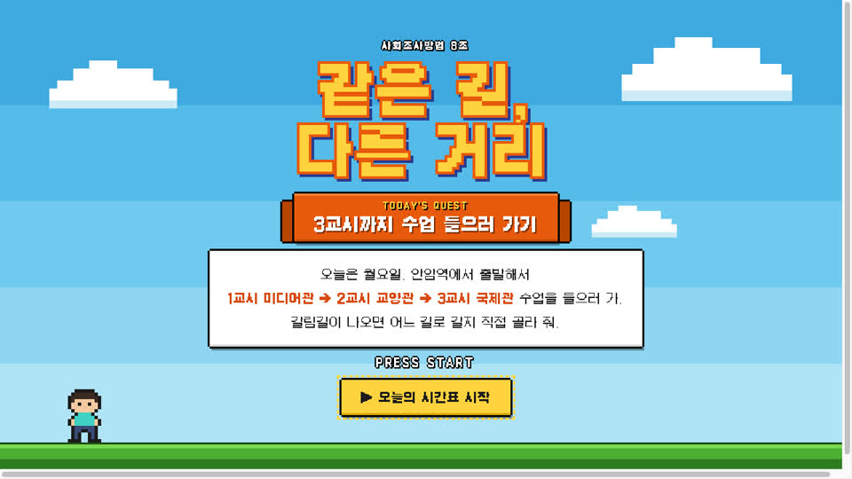
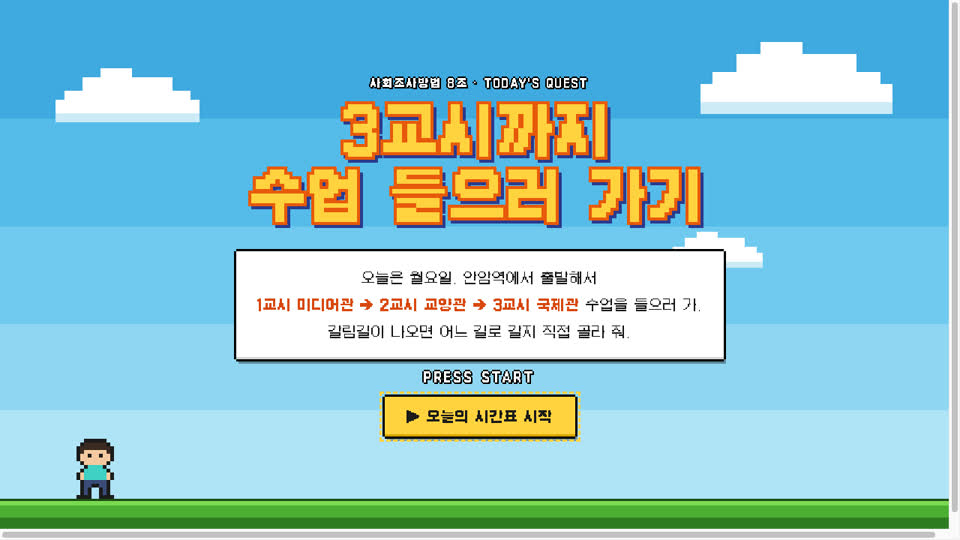


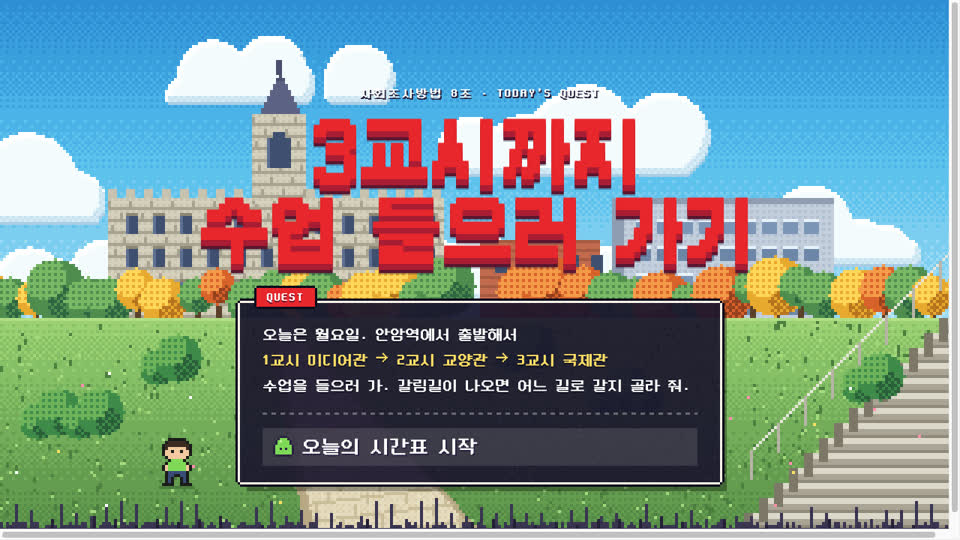


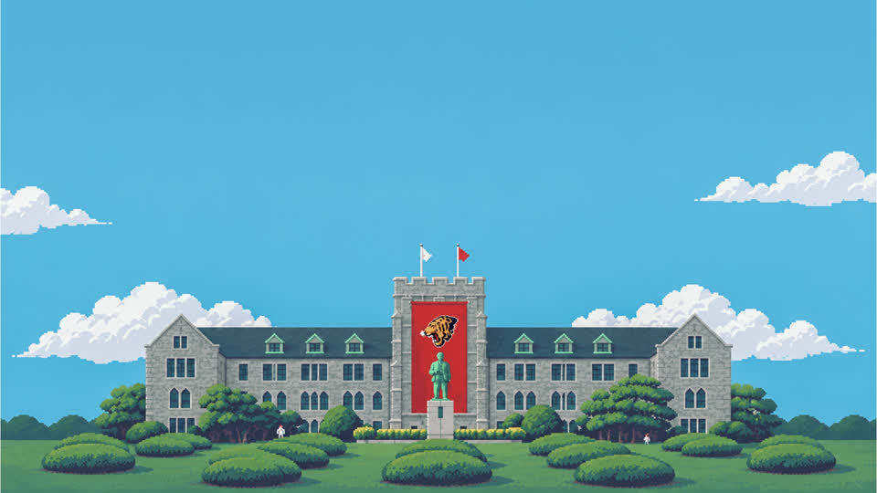


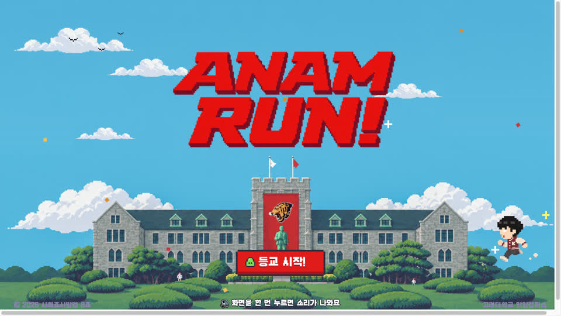
게임 화면 발전 경과
같은 장면(걷기 3번 영상 · 카페 앞 자막)으로 비교. 2026-11-24 하루 동안.

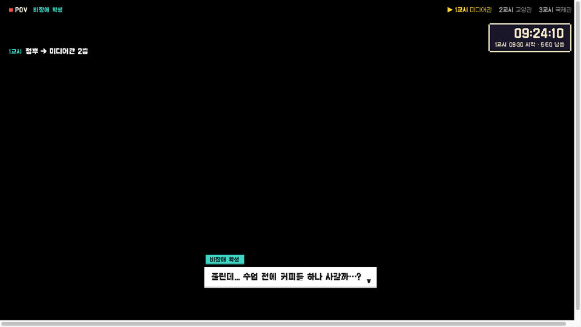

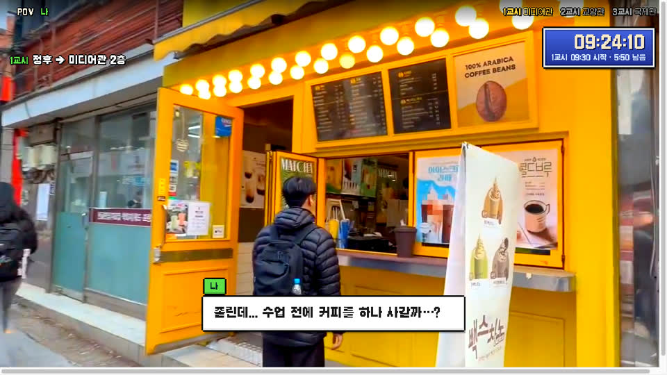
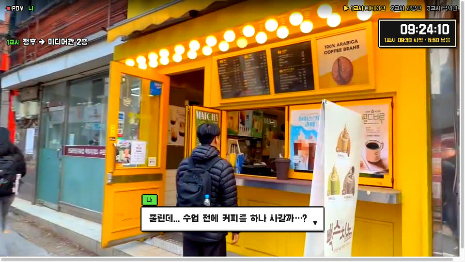


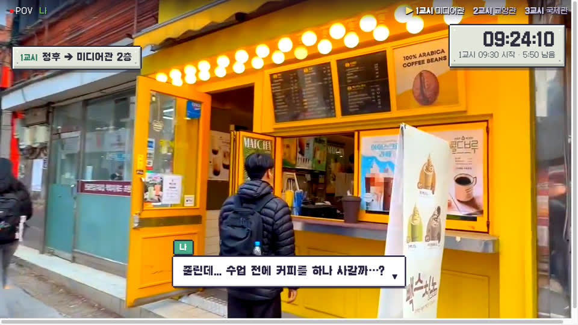
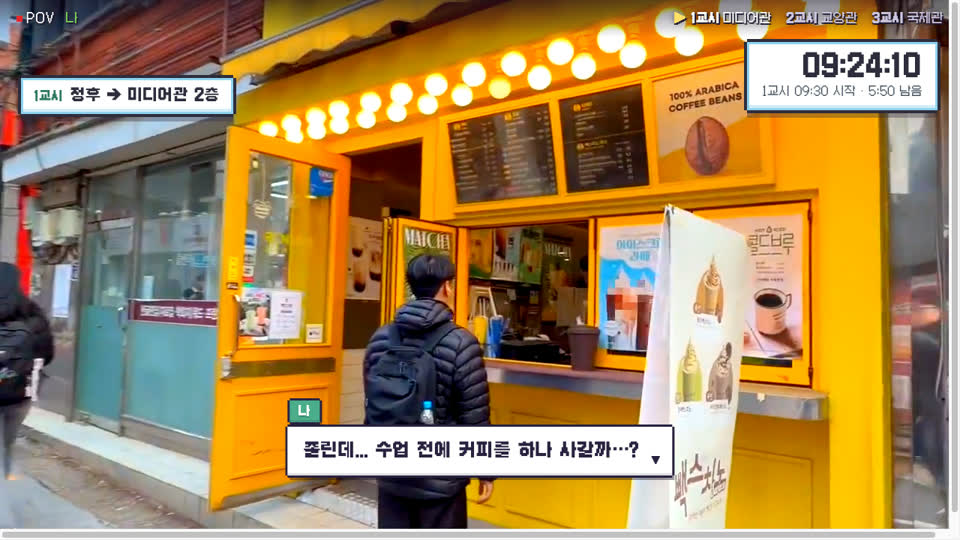
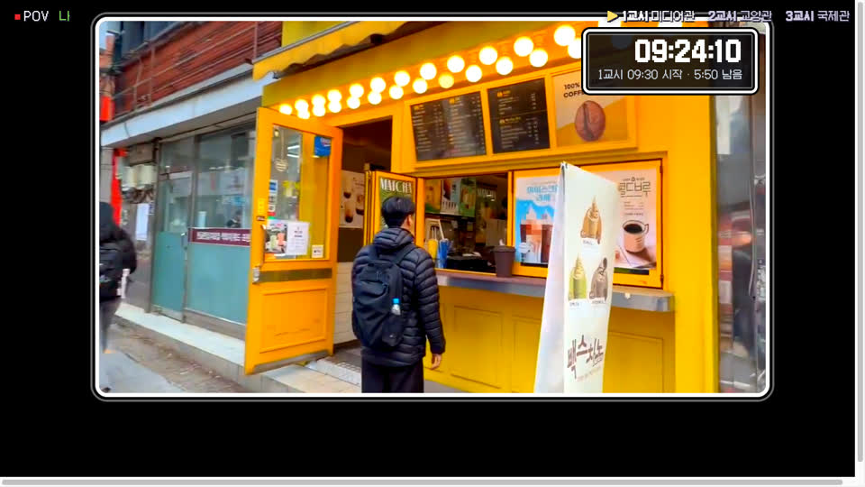


이후 장소·시계 판을 조원의 '인게임 버튼' 그림(하늘색 강철 판)으로 바꾸고, 글씨를 둥근모꼴로, 빨강을 로고 색으로 맞췄다.
한계
- 한 번의 촬영: 하루, 한 사람, 한 번 지나간 기록이다. 날씨·시간대·혼잡도(엘리베이터 대기 인원 등)에 따라 결과는 얼마든지 달라진다.
- 밀어 준 촬영을 환산: 휠체어 촬영은 뒤에서 밀어 준 속도라 혼자 미는 시간은 배율로 추정했다. 실제 휠체어 이용자가 같은 길을 혼자 이동하며 잰 시간이 아니다.
- 경사도 미측정: 평지·오르막·급경사 구분은 영상 장면을 보고 판단했다. 실제 경사도는 재지 않았다.
- 시간으로 다 담을 수 없는 것: 피로, 위험(턱에 걸리는 순간), 문을 열어 달라고 부탁해야 하는 부담, 주변 시선 같은 경험은 시계 숫자로 표현되지 않는다.
- 경로 일부만: 캠퍼스의 모든 길이 아니라 정해진 수업 동선 일부만 촬영했다.
- 편집본 길이 ≠ 실제 시간: 화면 속 영상은 빨리감기된 편집본이라, 영상이 끝나는 데 걸리는 시간과 시계의 시간은 다르다.
- 자동 모자이크: 얼굴 인식으로 자동 처리해서 일부 프레임에서 누락될 수 있다.
조작법·단축키
| 키 | 기능 |
|---|---|
| Space | 영상 재생 / 일시정지 |
| → | 지금 영상 건너뛰기 (다음 화면으로) |
| Backspace | 이전 화면으로 돌아가기 (GAME OVER 화면에선 같은 선택지로) |
| M | 소리(효과음·배경음) 끄기 / 켜기 |
| P | 영상 픽셀 필터 끄기 / 켜기 |
| ↑↓←→ + Enter | 메뉴·선택지에서 커서 이동, 선택 |
- 소리: 브라우저 정책 때문에 화면을 한 번 눌러야 소리가 나온다.
- 튜토리얼: 오른쪽 위 "건너뛰기 ▶▶" 버튼으로 바로 1교시부터 시작할 수 있다. 대화는 클릭이나 Enter/Space로 넘긴다.
- 영상 화면: 오른쪽 아래 재생/건너뛰기 버튼으로도 조작할 수 있다.
- 자막 편집기: edit.html(자막 수정실)에서 자막·선택지 문구를 고칠 수 있다. 온라인에선 바로 저장되지 않고
subs.json파일로 내려받아 전달한다. - 새로고침: 수정이 반영되지 않으면 ⌘+Shift+R (윈도우는 Ctrl+Shift+R).
발표 팁
추천 흐름
- 1부 플레이: 장애 얘기는 꺼내지 않고 "오늘 3교시까지 수업 가 보자"로 시작한다. 갈림길 선택은 관객에게 맡긴다.
- 반전: 1부가 끝나고 휠체어 시점이 공개될 때 잠깐 멈춰서 반응을 본다.
- 2부 플레이: 같은 갈림길에서 관객이 계단 쪽을 고르면 GAME OVER를 그대로 보여 준다. 엘리베이터 대기 화면에서 시계가 흐르는 걸 짚어 준다.
- 교시 끝 비교: 2부 교시 끝 화면의 "아까 나 → 지금" 숫자를 읽어 준다.
- 결과 막대: 교시별 이동 시간 막대로 마무리한다. 2교시(바로 옆 건물인데 8.8배)가 가장 극적이다.
관객 참여
선택지마다 손을 들게 하거나 앞줄에 고르게 하면 "내가 고른 길이 막혔다"는 경험이 더 강해진다. 시간이 부족하면 →로 영상을 건너뛰어도 시계와 기록은 원본 시간 기준으로 계산된다.
질문 대비
- "배율은 어디서 나왔나?" → 문헌을 참고한 추정치이고 실측이 아니라는 점, 엘리베이터는 배율 없이 실제 시간이라는 점을 먼저 말한다. (2번)
- "한 번 찍은 걸로 일반화할 수 있나?" → 할 수 없다. 이 작업은 측정 연구가 아니라 경험을 보여 주는 민족지적 기록에 가깝다. (4번)
- "AI는 어디까지 썼나?" → 촬영·문구·길 구조는 조원이, 구현·에셋 보조·자료 조사에 AI를 썼다. (3번)
- "왜 지각이 한 번뿐인가?" → 결과를 과장하지 않으려고 원본 시간을 그대로 썼다. 지각하지 않아도 매번 여유가 거의 없다는 게 핵심이다.